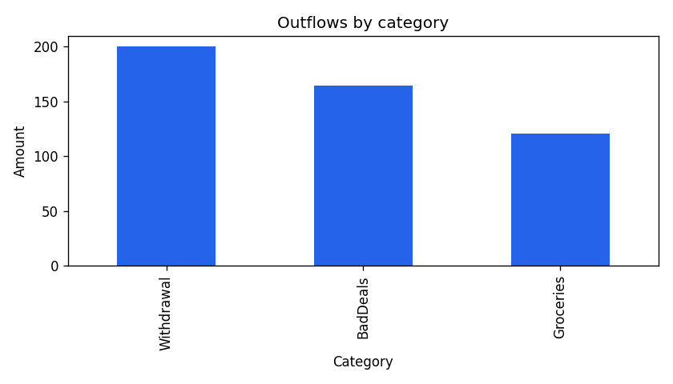

Fictional bank: COBOL out, Python in
I had studied and received a specialized certification as an IBM Mainframe Developer, and wanted to show my understanding of generating .csv files from a COBOL database so that it can be processed in Python and Pandas for the sake of analysis. In this case it's just demonstrating one banking client's spending habits. These habits can be analyzed to determine what someone is spending money on. In a real-world project we can take the data of a person's spending habits and determine risky behavior for health insurance companies or for law enforcement to investigate illegal activity such as money laundering. This data can be packaged and served to any number of customers who would want to know more about a person's spending habits.
I wanted to demonstrate one portfolio project that shows my understanding of both sides of the data pipeline and programming needed to analyze legacy data. This project shows a small COBOL program that behaves like a batch job writing transaction lines, and a short Python pass that turns those lines into something a stakeholder could glance at — totals by category and merchant.
The CSV has no header (the COBOL program just writes rows), so the analysis script names the columns explicitly and strips the padding COBOL adds to fixed-length fields. That friction is the point: real handoffs from legacy feeds often look like this.
With only four transactions, the charts are more proof-of-pipeline than a deep “habits” study. The next step, when I pick the project back up,
is more rows and clearer stories — but the bridge from bank_main.cob to spending_analysis.py is in place.